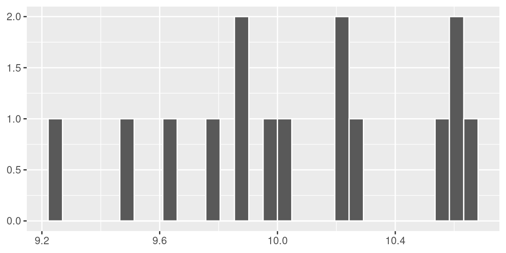
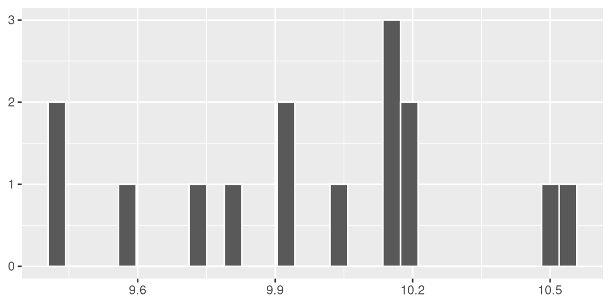
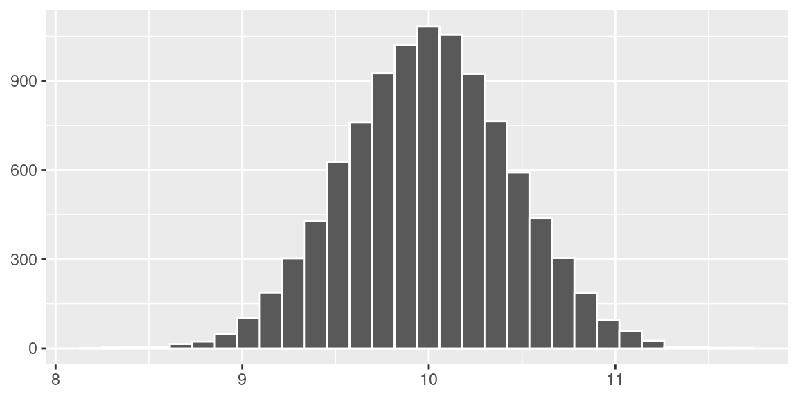
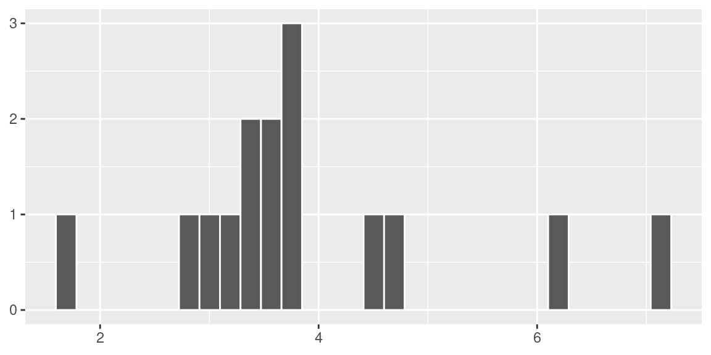
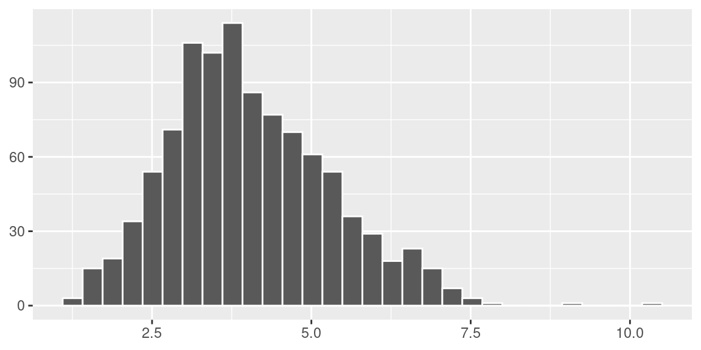
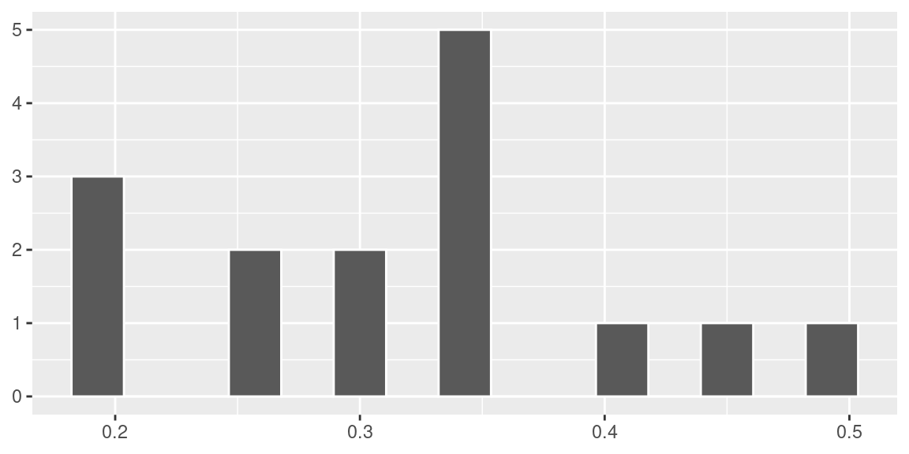
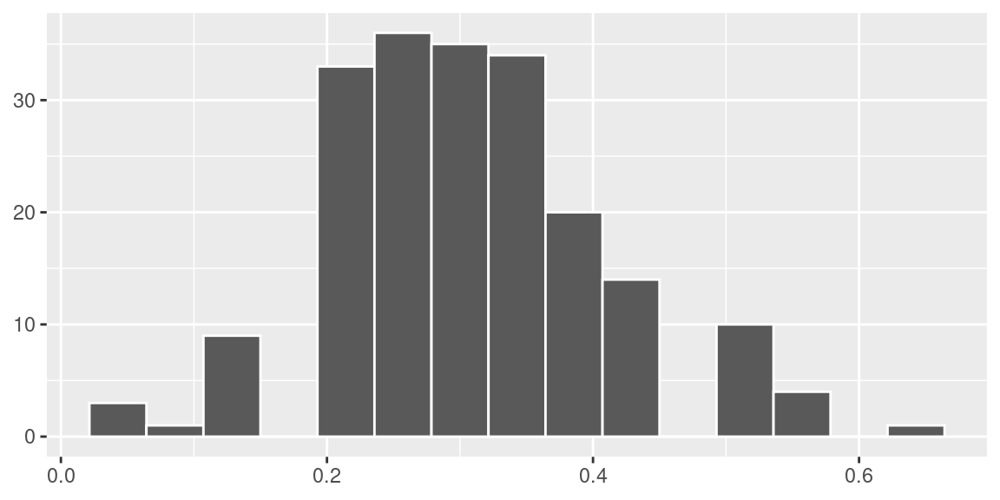

Capítulo 4 Distribuições Amostrais
4.1 Introdução
Uma distribuição amostral é a distribuição de probabilidades de uma medida estatística baseada em uma amostra aleatória. Ao retirar uma amostra aleatória de uma população estaremos considerando cada valor da amostra como um valor de uma variável aleatória cuja distribuição de probabilidade é a mesma da população no instante da retirada desse elemento para a amostra. Em consequência do fato de os valores de amostra serem aleatórios, decorre que qualquer quantidade calculada em função dos elementos da amostra também será uma variável aleatória
4.2 Distribuição Amostral da Média Amostral
Considere \(X_1,\ldots,X_n\) uma amostra aleatória de uma distribuição normal com média \(\mu\) e variância \(\sigma^2\).
Tomamos, por exemplo, o problema de estimar quantas horas adicionais de sono são garantidas a um indivíduo após ingerir uma determinada droga. Além disso, suponha que a droga é testada em 20 indivíduos de modo que a média amostral seja \(\bar X=0,8\) horas. Porém, se o estudo for repetido com outros 20 participantes podemos ter outros resultados para a média amostral. Por exemplo, podemos ter \(\bar X=1,3\). E, repetindo o estudo novamente, poderíamos ter \(\bar X=-0,2\). Em termos estatísticos, haverá variação entre as médias amostrais.
Este problema poderia ser resolvido se repetíssemos o estudo infinitas vezes, porém isto é inviável.
Quando as observações são amostradas aleatoriamente de uma distribuição normal, a média amostral também tem uma distribuição normal. Isto é, quando \(n\) observações são amostradas aleatoriamente de uma distribuição normal com média \(\mu\) e variância \(\sigma^2\), a média amostral tem distribuição normal com média \(\mu\) e variância \(\frac{\sigma^2}{n}\). Ou seja, se
\[X\sim N(\mu,\sigma^2)\text{, então} \bar X \sim N\left(\mu,\frac{\sigma^2}{n}\right).\]
4.2.1 Visualizando
Considere uma população normal com média \(\mu=10\) e variância \(\sigma^2=4\). Vamos realizar um estudo de simulação para a distribuição da média amostral considerando amostras de tamanho 20 dessa população.
Primeiramente, considere que são retiradas 15 amostras de tamanho 20 dessa população.
library(ggplot2)
n = 15
matriz_aux = matrix(NA,nrow=20,ncol=n)
for(j in 1:ncol(matriz_aux)){matriz_aux[,j]=rnorm(20,mean=10,sd=2)}
medias = data.frame(x=1:ncol(matriz_aux),y=colMeans(matriz_aux))
ggplot(medias,aes(y)) +
geom_histogram(color = "white") +
theme(axis.title = element_blank())
Nessa simulação obtivemos \(\bar x =\) 9.91 e \(s =\) 0.44.
Suponha agora que façamos o mesmo processo, porém ao invés de considerarmos 15 amostras de tamanho 20, consideramos 200 amostras.
n = 200
matriz_aux = matrix(NA,nrow=20,ncol=n)
for(j in 1:ncol(matriz_aux)){matriz_aux[,j]=rnorm(20,mean=10,sd=2)}
medias = data.frame(x=1:ncol(matriz_aux),y=colMeans(matriz_aux))
ggplot(medias,aes(y)) +
geom_histogram(color = "white") +
theme(axis.title = element_blank())
Agora, obtivemos \(\bar x =\) 9.98 e \(s =\) 0.49.
Realizando o mesmo experimento, porém agora considerando 10000 amostras de tamanho 20, a distribuição da média amostral pode ser vista segundo o histograma abaixo.
n = 10000
matriz_aux = matrix(NA,nrow=20,ncol=n)
for(j in 1:ncol(matriz_aux)){matriz_aux[,j]=rnorm(20,mean=10,sd=2)}
medias = data.frame(x=1:ncol(matriz_aux),y=colMeans(matriz_aux))
ggplot(medias,aes(y)) +
geom_histogram(color = "white") +
theme(axis.title = element_blank())Para este caso, a média das médias amostrais foi \(\bar x=\) 10.01 e o desvio padrão foi \(s =\) 0.45. Então, empiricamente, podemos perceber que a distribuição da média amostral se aproxima de uma distribuição normal com média \(\mu=10\) e desvio padrão \(\frac{\sigma}{\sqrt{n}}=\frac{2}{\sqrt{20}}=0,4472\).
4.2.2 Prova
Para provar que se \(X\sim N(\mu,\sigma^2)\), então \(\bar X \sim N(\mu,\frac{\sigma^2}{n})\), vamos precisar de somente três passos.
- Dado que \(\bar X = \frac{1}{n}\sum_{i=1}^{n}X_i\), onde \(X_1,\ldots,X_n\) é uma amostra aleatória de tamanho \(n\) de uma população Normal sabemos que combinação linear de Normais resulta em também uma distribuição Normal, portanto daqui temos que \(\bar X \sim Normal\);
- Se \(\bar X = \frac{1}{n}\sum_{i=1}^{n}X_i\), então \[E\left[\bar X\right] = E\left[\frac{1}{n}\sum_{i=1}^{n}X_i\right]=\frac{1}{n}\sum_{i=1}^{n}E\left[X_i\right]=\frac{n\mu}{n}=\mu\]
- Por fim, se \(\bar X = \frac{1}{n}\sum_{i=1}^{n}X_i\), então como os \(X_i\)’s são independentes \[V \left[\bar X\right] = V\left[\frac{1}{n}\sum_{i=1}^{n}X_i\right]=\frac{1}{n^2}\sum_{i=1}^{n}V\left[X_i\right]=\frac{n\sigma^2}{n^2}=\frac{\sigma^2}{n}\]
4.3 Teorema Central do Limite
Os resultados vistos anteriormente são válidos para populações normais, isto é, se uma população é normal com média \(\mu\) e variância \(\sigma^2\), então a distribuição amostral de \(\bar X\) é também normal com média \(\mu\) e variância \(\frac{\sigma^2}{n}\), onde \(n\) é o tamanho da amostra. O Teorema Central do Limite (TCL) nos fornece um resultado análogo para qualquer distribuição populacional, desde que o tamanho da amostra seja suficientemente grande.
Seja \(X_1,\ldots,X_n\) uma amostra aleatória simples de uma população \(X\) tal que \(E(X)=\mu\) e \(V(X)=\sigma^2\). Então, a distribuição de \(\bar X\) converge para a distribuição Normal com média \(\mu\) e variância \(\frac{\sigma^2}{n}\) quando \(n\rightarrow \infty\). Equivalentemente, \[\frac{\bar X-\mu}{\frac{\sigma}{\sqrt{n}}}\rightarrow N(0,1)\]
A interpretação prática do TCL é a seguinte: para amostras ``grandes” de qualquer população, podemos aproximar a distribuição amostral de \(\bar X\) por uma distribuição normal com a mesma média populacional e variância igual à variância populacional dividida pelo tamanho da amostra.
Quão grande deve ser a amostra para se obter uma boa aproximação depende das características da distribuição populacional. Se a distribuição populacional não se afastar muito de uma distribuição normal, a aproximação será boa, mesmo para tamanhos pequenos de amostra. Em termos práticos, esse teorema é de extrema importância, daí ser chamado de Teorema Central e, em geral, amostras de tamanho \(n>30\) já fornecem uma aproximação razoável.
4.3.1 Visualizando
Considere uma população exponencial com média \(\mu=1\), ou seja, uma população distribuída segundo uma exponencial com parâmetro \(\lambda=1\).
O gráfico superior representa a distribuição populacional e os histogramas representam a distribuição amostral de \(\bar X\) ao longo de 5000 amostras de tamanhos 10, 50, 100 e 250. Assim, podemos ver que, embora a população seja completamente diferente da normal, a distribuição amostral de \(\bar X\) vai se tornando cada vez mais próxima da normal à medida que \(n\) aumenta.
matriz_aux_10 = matrix(NA,nrow=5000,ncol=10)
matriz_aux_50 = matrix(NA,nrow=5000,ncol=50)
matriz_aux_100 = matrix(NA,nrow=5000,ncol=100)
matriz_aux_250 = matrix(NA,nrow=5000,ncol=250)
for(j in 1:ncol(matriz_aux_10)){matriz_aux_10[,j]=rexp(5000,rate=1)}
for(j in 1:ncol(matriz_aux_50)){matriz_aux_50[,j]=rexp(5000,rate=1)}
for(j in 1:ncol(matriz_aux_100)){matriz_aux_100[,j]=rexp(5000,rate=1)}
for(j in 1:ncol(matriz_aux_250)){matriz_aux_250[,j]=rexp(5000,rate=1)}
medias_10 = data.frame(x=1:ncol(matriz_aux_10),y=colMeans(matriz_aux_10),label="id_10")
medias_50 = data.frame(x=1:ncol(matriz_aux_50),y=colMeans(matriz_aux_50),label="id_50")
medias_100 = data.frame(x=1:ncol(matriz_aux_100),y=colMeans(matriz_aux_100),label="id_100")
medias_250 = data.frame(x=1:ncol(matriz_aux_250),y=colMeans(matriz_aux_250),label="id_250")
tudo = rbind(medias_10,medias_50,medias_100,medias_250)
tudo$label = factor(tudo$label, levels = c("id_10", "id_50", "id_100", "id_250"))
ggplot(tudo,aes(y)) +
geom_histogram(aes(y=..density..),color = "white") +
facet_wrap(~label, scales = "free") +
theme(axis.title = element_blank())
4.4 Distribuição Amostral da Variância Amostral
Já vimos que a estatística \[S^2=\frac{1}{n-1}\sum_{i=1}^{n}\left(X_i-\bar X\right)^2\] é um estimador não viciado da variância \(\sigma^2\), portanto \[E(S^2)=\sigma^2\]. Vamos estudar agora a distribuição amostral de \(S^2\) e para isso precisamos estudar a distribuição qui-quadrado.
4.4.1 Distribuição Qui-quadrado
Se \(X\) é uma variável aleatória com densidade
\[f_X(x)=\frac{1}{\Gamma\big({\frac{k}{2}}\big)}\big(\frac{1}{2}\big)^{\frac{k}{2}}x^{\frac{k}{2}-1}e^{-\frac{x}{2}},k>0,x>0,\]
onde \(\Gamma(w)=\int_0^\infty x^{w-1}e^{-x}dx, w>0\). Então, \(X\) tem uma distribuição qui-quadrado com \(k\) graus de liberdade, onde o parâmetro \(k\) é um número inteiro.
Para entender a ideia de graus de liberdade, consideremos um conjunto de dados qualquer. Graus de liberdade é o número de valores deste conjunto de dados que podem variar após terem sido impostas certas restrições a todos os valores. Por exemplo, consideremos que 10 estudantes obtiveram em um teste média 8. Assim, a soma das 10 notas deve ser 80 (restrição). Portanto, neste caso, temos um grau de liberdade de \(10-1=9\), pois 9 notas podem variar livremente desde que a soma seja 80, no entanto 1 nota sempre será [80-(soma das 9 outras notas)].
Temos também que se as variáveis aleatórias \(X_i\), \(i=1,2,\ldots,n\) são independentes e normalmente distribuídas com médias \(\mu_i\) e variâncias \(\sigma^2_i\), isto é \(X_i\sim N(\mu_i,\sigma^2_i)\), então
\[U=\sum_{i=1}^{n}\left(\frac{X_i-\mu}{\sigma^2}\right)^2\]
tem uma distribuição qui-quadrado com \(n\) graus de liberdade.
Além disso, se \(X_1,\ldots,X_n\) é uma a.a. de uma distribuição normal padrão, então, valem as seguintes propriedades:
\(\bar X\) e \(\sum_{i=1}^{n}(X_i-\bar X)^2\) são independentes;
\(\sum_{i=1}^{n}(X_i-\bar X)^2\) tem uma distribuição qui-quadrado com \(n-1\) graus de liberdade.
Assim, chegamos que se \(S^2\) é a variância amostral de uma amostra aleatória \(X_1,\ldots,X_n\) de uma distribuição normal com média \(\mu\) e variância \(\sigma^2\), então
\[U=\frac{(n-1)S^2}{\sigma^2}\sim \chi^2_{n-1},\]
ou seja, \(U\) tem uma distribuição qui-quadrado com \(n-1\) graus de liberdade.
4.4.2 Visualizando
Analogamente ao estudo de simulação realizado no caso da média amostral, considere uma população normal com média \(\mu=10\) e variância \(\sigma^2=4\).
Primeiramente, considere que são retiradas 15 amostras de tamanho 20 dessa população.
n = 15
matriz_aux = matrix(NA,nrow=20,ncol=n)
for(j in 1:ncol(matriz_aux)){matriz_aux[,j]=rnorm(20,mean=10,sd=2)}
variancias = data.frame(x=1:ncol(matriz_aux),y=apply(matriz_aux,2,var))
ggplot(variancias,aes(y)) +
geom_histogram(color = "white") +
theme(axis.title = element_blank())
Nessa simulação obtivemos a média das variâncias igual a 3.86 e a variância das variâncias igual a 0.73.
Suponha agora que façamos o mesmo processo, porém ao invés de considerarmos 15 amostras de tamanho 20, consideramos 1000 amostras.
n = 1000
matriz_aux = matrix(NA,nrow=20,ncol=n)
for(j in 1:ncol(matriz_aux)){matriz_aux[,j]=rnorm(20,mean=10,sd=2)}
variancias = data.frame(x=1:ncol(matriz_aux),y=apply(matriz_aux,2,var))
ggplot(variancias,aes(y)) +
geom_histogram(color = "white") +
theme(axis.title = element_blank())
Neste caso a média das variâncias foi igual a 4.02 e a variância das variâncias igual a 1.55.
Realizando o mesmo experimento, porém agora considerando 10000 amostras de tamanho 20, a distribuição da variância amostral pode ser vista segundo o histograma abaixo.
n = 10000
matriz_aux = matrix(NA,nrow=20,ncol=n)
for(j in 1:ncol(matriz_aux)){matriz_aux[,j]=rnorm(20,mean=10,sd=2)}
variancias = data.frame(x=1:ncol(matriz_aux),y=apply(matriz_aux,2,var))
ggplot(variancias,aes(y)) +
geom_histogram(color = "white") +
theme(axis.title = element_blank())
Neste caso, a média das variâncias é 3.98 e a variância é 1.67. Então, realmente, podemos perceber que a distribuição da variância amostral se aproxima de uma distribuição qui-quadrado com média \(\mu=4\) e variância \(\frac{2\sigma^4}{n-1}=\frac{2\times 16}{19}=1,684\).
Destas propriedades temos que \[V(S^2)=\frac{2\sigma^4}{n-1}.\]
4.5 Distribuição Amostral da Proporção
Considere uma população em que cada elemento é classificado de acordo com a presença ou ausência de determinada característica. Por exemplo, podemos pensar em eleitores escolhendo entre 2 candidatos, pessoas classificadas de acordo com o sexo, trabalhadores classificados como trabalhador com carteira assinada ou não, e assim por diante. Em termos de variável aleatória, essa população é representada por uma v.a. de Bernoulli, isto é:
\[ X=\begin{cases} 1,~\text{se elemento possui a característica de interesse}\\ 0,~\text{se elemento não possui a caracaterística de interesse} \end{cases} \]
Vamos denotar por \(p\) a proporção de elementos da população que possuem a característica de interesse. Então, \(P(X = 1) = p\), \(E(X) = p\) e \(V(X) = p(1 -p)\). Em geral, esse parâmetro é desconhecido e precisamos estimá-lo a partir de uma amostra.
Suponha, então, que dessa população seja extraída uma amostra aleatória simples \(X_1, X_2, \ldots , X_n\) com reposição. Essas \(n\) extrações correspondem a \(n\) variáveis aleatórias de Bernoulli independentes e, como sabemos, \(S_n =\sum_{i=1}^n X_i\) tem distribuição binomial com parâmetros \(n\) e \(p\).
Note que \(S_n\) dá o número total de “sucessos” nas \(n\) repetições, onde “sucesso,” neste caso, representa a presença da característica de interesse. Os valores possíveis de \(S_n\) são \(0, 1, 2,\ldots , n\). Com relação à proporção \(\hat P\) de elementos na amostra que possuem a característica de interesse, temos que
\[\hat P = \frac{S_n}{n}=\frac{X_1+X_2+\ldots+X_n}{n}\]
e os valores possíveis de \(\hat P\) são \(0,\frac{1}{n},\frac{2}{n},\ldots,\frac{n-1}{n},1\) com
\[P\left(\hat P = \frac{k}{n}\right)=P(S_n=k).\] Como a proporção amostral é uma média de uma amostra aleatória simples de uma população com distribuição de Bernoulli com parâmetro \(p\), o Teorema Limite Central nos diz, então, que a distribuição da proporção amostral se aproxima de uma normal com média \(p\) e variância \(\frac{p(1-p)}{n}\). Isto é,
\[\hat p \sim N\left(p,\frac{p(1-p)}{n}\right).\]
Como essa aproximação é uma conseqüência direta da aproximação normal da binomial, as mesmas regras continuam valendo: a aproximação deve ser feita se \(np \geq 5\) e \(n(1 - p) \geq 5\).
4.5.1 Visualizando
Considere uma população bernoulli com \(p=0,3\). Vamos realizar um estudo de simulação para a distribuição da proporção amostral considerando amostras de tamanho 20 dessa população.
Primeiramente, considere que são retiradas 15 amostras de tamanho 20 dessa população.
library(ggplot2)
n = 15
matriz_aux = matrix(NA,nrow=20,ncol=n)
for(j in 1:ncol(matriz_aux)){matriz_aux[,j]=rbinom(20,1,prob=0.3)}
medias = data.frame(x=1:ncol(matriz_aux),y=colMeans(matriz_aux))
ggplot(medias,aes(y)) +
geom_histogram(color = "white", bins = 15) +
theme(axis.title = element_blank())Nessa simulação obtivemos \(\hat p =\) 0.27.
Suponha agora que façamos o mesmo processo, porém ao invés de considerarmos 15 amostras de tamanho 20, consideramos 200 amostras.
n = 200
matriz_aux = matrix(NA,nrow=20,ncol=n)
for(j in 1:ncol(matriz_aux)){matriz_aux[,j]=rbinom(20,1,prob=0.3)}
medias = data.frame(x=1:ncol(matriz_aux),y=colMeans(matriz_aux))
ggplot(medias,aes(y)) +
geom_histogram(color = "white", bins = 15) +
theme(axis.title = element_blank())
Agora, obtivemos \(\hat p =\) 0.31.
Realizando o mesmo experimento, porém agora considerando 10000 amostras de tamanho 20, a distribuição da média amostral pode ser vista segundo o histograma abaixo.
n = 10000
matriz_aux = matrix(NA,nrow=20,ncol=n)
for(j in 1:ncol(matriz_aux)){matriz_aux[,j]=rbinom(20,1,prob=0.3)}
medias = data.frame(x=1:ncol(matriz_aux),y=colMeans(matriz_aux))
ggplot(medias,aes(y)) +
geom_histogram(color = "white", bins = 15) +
theme(axis.title = element_blank())
Para este caso, a média das proporções amostrais foi \(\hat p=\) 0.3. Então, empiricamente, podemos perceber que a distribuição da média amostral se aproxima de uma distribuição normal com média \(\mu=0,3\) e desvio padrão \(\frac{p(1-p)}{\sqrt{n}}=\frac{0.21}{\sqrt{20}}=0,0105\).